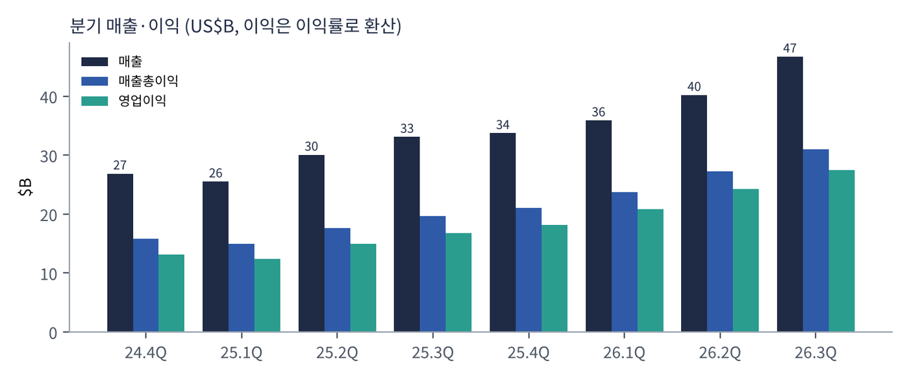
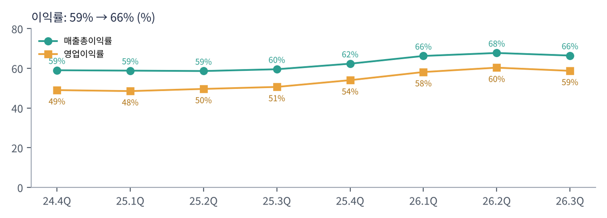
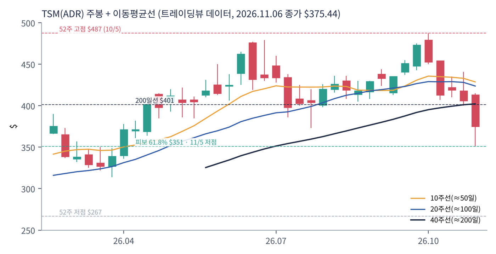
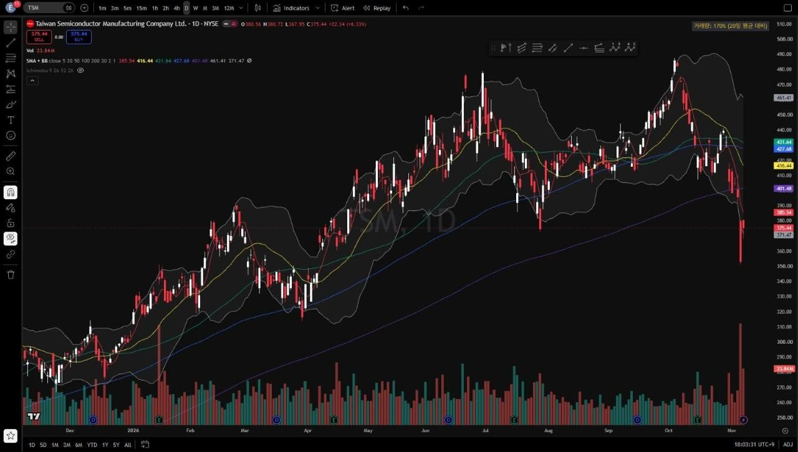
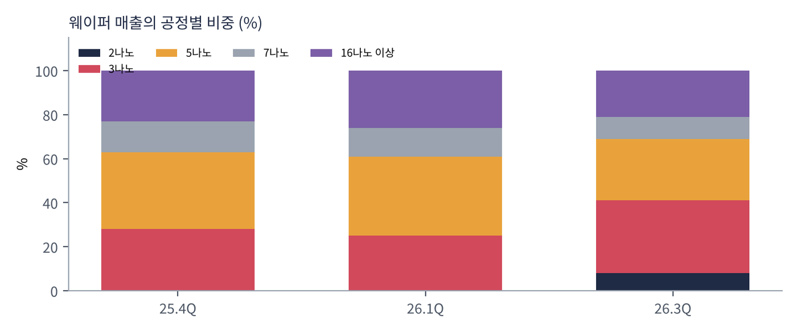

TSMC는 고객이 설계한 칩을 대신 만들어 주는 세계 1위 파운드리다. 엔비디아 GPU, 애플 아이폰 칩, AMD CPU·GPU, 브로드컴·마벨의 맞춤형 AI 칩, 구글 TPU가 모두 TSMC 공장에서 나온다. 2025년에는 534개 고객에게 12,682개 제품을 생산했다.
| 항목 | 내용 |
|---|---|
| 종목 | Taiwan Semiconductor Manufacturing Co. (TSM / 2330.TW) · 반도체 위탁생산 · 1987년 설립 · 본사 대만 신주 |
| 경영진 | C.C. 웨이 회장 겸 CEO / 웬델 황 CFO |
| 시가총액 | 약 $1.78T (ADR 11/6 종가 기준) |
| 최근 분기(3Q26) | 매출 NT$1,494.2B(US$46.72B), 순이익 NT$763.1B, EPS NT$29.43(ADR $4.60) |
| 밸류에이션 | TTM PER 25.7배. 가이던스대로라면 선행 PER은 20배 안팎 |
| 설비투자 | 2026년 $60~64B(2025년 $40.9B). 2026~2028년 투자는 직전 3년보다 많을 것 |
| 분기 | 매출(US$) | YoY | 매출총이익률 | 영업이익률 | 순이익(NT$) | 공정 비중 (3나노 / 5나노 / 7나노) |
|---|---|---|---|---|---|---|
| 2024.4Q | $26.9B | +37% | 59.0% | 49.0% | 374.7B | - |
| 2025.1Q | $25.5B | +35% | 58.8% | 48.5% | 361.6B | - |
| 2025.2Q | $30.1B | +44% | 58.6% | 49.6% | 398.3B | - |
| 2025.3Q | $33.1B | +41% | 59.5% | 50.6% | 452.3B | - |
| 2025.4Q | $33.7B | +25% | 62.3% | 54.0% | 505.7B | 28% / 35% / 14% |
| 2026.1Q | $35.9B | +41% | 66.2% | 58.1% | 572.5B | 25% / 36% / 13% |
| 2026.2Q | $40.2B | +34% | 67.7% | 60.3% | 706.6B | 2나노 3% |
| 2026.3Q | $46.7B | +41% | 66.4% | 58.7% | 763.1B | 2나노 8% · 33% / 28% / 10% |

이익률이 '파운드리답지 않은' 수준으로 올라갔다. 2025년 상반기까지 58~59%였던 매출총이익률이 2026년 66~68%가 됐다. 3나노·5나노 공장이 꽉 차 있고, AI 칩 수요가 넘쳐 가격 협상력이 커졌기 때문이다. 3분기에는 2나노 초기 양산의 원가 부담으로 1.3%p 낮아졌지만 여전히 가이던스(65~67%)의 중간 위였다.
순이익은 매출보다 빨리 늘었다. 3Q26 매출이 +51%(NT$ 기준)일 때 순이익은 +68.7%였다. 6개 분기 연속 사상 최대 이익이다. 2025년 4분기 대비 순이익은 1년도 안 돼 1.5배가 됐다.

| 항목 | 가이던스 | 비교 |
|---|---|---|
| 매출 | US$52.3~54.3B | 중간값 기준 전 분기 대비 +14%, 전년 대비 +58% |
| 매출총이익률 | 65~67% | 2나노 급증에 따른 희석 지속 |
| 영업이익률 | 56.5~58.5% | 환율 가정 US$1 = NT$31.8 |
트레이딩뷰 TSM(ADR) 일봉 300개(2025.8 ~ 2026.11.6)와 주봉으로 계산했다. 결론부터 말하면 반도체 종목 중 하락 폭이 상대적으로 작고(-23%), 피보나치 61.8%에서 정확히 반등했다. 다만 200일선 아래여서 추세 판단은 아직 매도 쪽이다.


위: 주봉 재구성 차트. 아래: 트레이딩뷰 일봉 캡처(작도 없이 이동평균선·볼린저밴드만 표시).
| 이동평균 | 값 | 종가 대비 | 해석 |
|---|---|---|---|
| 5일선 | $385.5 | -2.6% | 11/5 -10.8% 급락, 11/6 +6.3% 반등 |
| 20일선 | $416.4 | -9.8% | 10월 중순 이후 하락 |
| 50일선 | $431.6 | -13.0% | 8~10월 상승 추세의 중심 |
| 100일선 | $427.7 | -12.2% | 50일선과 겹침 — $416~432 저항대 |
| 200일선 | $401.5 | -6.5% | 11월 첫 주 이탈. 여전히 우상향 |
배열은 50일 > 100일 > 20일 > 200일 > 5일 > 주가다. 2025년 11월 저점($267)에서 2026년 10월 고점($487)까지 +83% 올랐고, 10월 둘째 주부터 조정에 들어갔다. 11월 첫 주 $413 → $375(-9%), 장중 $351까지 밀렸다. 이 $351은 1년 상승폭의 피보나치 61.8%($351.1)와 정확히 같은 가격이다. 거래량은 20일 평균의 170%였다.
| 규칙 | 기준 | 현재 값 | 신호 |
|---|---|---|---|
| 장기 추세 필터 | 종가 vs 200일선 | $375.4 < $401.5 | 매도 |
| 중장기 교차 | 50일선 vs 200일선 | $431.6 > $401.5 | 매수 |
| 단기 교차 | 20일선 vs 50일선 | $416.4 < $431.6 | 매도 |
| 돈키언 채널 | 55일 고가·저가 | 11/5 $351.2로 55일 최저가 | 매도 |
| 1개월 모멘텀 | 21거래일 수익률 | -18.0% (기준 $458.0) | 매도 |
| 3개월 모멘텀 | 63거래일 수익률 | -10.3% (기준 $418.5) | 매도 |
| 6개월 모멘텀 | 126거래일 수익률 | -8.8% (기준 $411.7) | 매도 |
| 12개월 모멘텀 | 252거래일 수익률 | +27.9% (기준 $293.6) | 매수 |
| 종합 (8개 평균) | -0.50 | 매도 | |
해석: 메모리·AI 칩 종목들과 같은 -0.50이지만 질이 다르다. 3개월(-10%)·6개월(-9%) 모멘텀의 낙폭이 작고, 기준가($412~419)와 200일선($401)이 현재가에서 7~12% 위에 몰려 있다. $420까지만 회복해도 신호 4개가 한꺼번에 매수로 돌아서 종합 점수가 플러스가 된다. 다른 반도체보다 추세 복귀가 가장 가까운 종목이다. 14일 ATR은 $17.5(주가의 4.7%)다.
| 가격 | 무엇이 바뀌나 | 의미 |
|---|---|---|
| $401 | 200일선 | 장기 추세 필터 매수 전환 (-0.50 → -0.25) |
| $412 ~ 419 | 6개월·3개월 기준가 | 종합 점수 플러스 전환 |
| $432 | 50일선 | 단기 교차 회복 가능 구간 |
| $351 이탈 | 피보나치 61.8% 붕괴 | 3월 박스($314~350)로 회귀 |
| 구분 | 가격대 | 근거 |
|---|---|---|
| 저항 2 | $416 ~ 432 | 20·50·100일선 |
| 저항 1 | $385 ~ 401 | 5일선, 200일선 |
| 지지 1 | $351 | 11/5 저점 = 피보나치 61.8% |
| 지지 2 | $314 ~ 340 | 2026년 3월 박스, 피보나치 78.6%($314) |
기본 판단: AI 공급망의 '필수재'가 업종 급락에 함께 끌려 내려온 구간. TSMC는 엔비디아·브로드컴·AMD·애플 누가 이기든 칩을 만드는 쪽이어서, 개별 고객 경쟁의 위험이 가장 작다. 다음 분기 가이던스(+58%)와 이익률(65~67%)도 최상급이다. 피보나치 지지에서의 반등을 활용한 분할 매수가 손익비가 가장 좋은 종목으로 본다.
| 가격대 | 시나리오 | 대응 |
|---|---|---|
| $432 이상 | 추세 복귀 확정 | 2차 익절, 잔여 추세 추종 |
| $401 종가 회복 | 장기 추세 필터 매수 전환 | 추세 매수 50% 추가 |
| $351 ~ 376 | 61.8% 지지 테스트 | 분할 매수 50% |
| $338 이하 종가 | 지지 붕괴 | 손절 |
| $314 ~ 340 | 3월 박스 | 관망 |
TSMC는 웨이퍼를 팔아 돈을 번다. 고객이 설계 파일을 주면 TSMC가 해당 공정으로 웨이퍼를 생산하고, 첨단 패키징(CoWoS·SoIC)까지 맡는다. 매출은 어떤 공정이냐(가격)와 어떤 응용처냐(수요)로 나눠 보면 이해가 쉽다.

| 구분 | 내용 | 3Q26 |
|---|---|---|
| 2나노 (N2) | 2025년 말 양산 시작한 최신 공정. 웨이퍼 단가가 가장 비싸고, 초기에는 원가가 높아 이익률을 낮춘다 | 8% (2분기 3%) |
| 3나노 (N3) | 애플 A·M 시리즈, 엔비디아 베라 루빈 세대, AMD MI450 등. 연말까지 매진 | 33% |
| 5나노 (N5/N4) | 엔비디아 블랙웰, 다수의 AI 가속기·스마트폰 칩 | 28% |
| 7나노 (N7) | 네트워크·일부 AI·자동차 | 10% |
| HPC 비중 | AI 가속기·서버 CPU·네트워크 칩 등 | 매출의 68% |
매출의 3분의 2가 AI·서버(HPC)다. 몇 년 전까지 TSMC의 최대 고객군은 스마트폰이었다. 지금은 HPC가 68%이고, AI 가속기만으로 2025년 웨이퍼 매출의 17~19%를 차지했다(1월 콜, 보도). 회사는 AI 가속기 매출이 2024~2029년 연평균 54~56% 늘 것으로 본다. 3나노와 2나노의 비중이 합쳐 41%로 올라오면서 평균 웨이퍼 단가도 계속 오른다.
TSMC의 원칙은 창업 이래 같다. "고객과 경쟁하지 않는다." 직접 칩을 설계하지 않기 때문에 엔비디아와 AMD, 애플과 구글이 모두 안심하고 가장 중요한 칩을 맡긴다. 이 신뢰 위에 세 가지 목표를 쌓고 있다.
| 목표 | 내용 |
|---|---|
| 기술 리더십 | 2나노 '가파른 램프업', 다음 세대 A16(후면 전력 공급)·A14. 경쟁사(삼성·인텔)보다 1~2세대 앞선 공정을 가장 높은 수율로 공급 |
| 첨단 패키징 | AI 칩과 HBM을 하나로 묶는 CoWoS. 수요가 연 80% 늘어 생산능력을 3배로 늘리는 중. "CoWoS는 고객의 최우선 선택"(웨이) |
| 글로벌 생산 | 미국 애리조나·텍사스, 일본, 독일로 공장을 넓혀 지정학 위험과 관세에 대응. 해외 공장은 원가가 높아 이익률을 깎는 요인 |
엔비디아는 'AI 팩토리', 브로드컴과 마벨은 '맞춤형 칩과 연결', 메모리 3사는 'HBM'을 파는 회사라면, TSMC는 이들 모두의 공통 분모다. 누가 AI 칩 경쟁에서 이기든 칩은 TSMC에서 만들어진다. 웨이 CEO가 "AI 수요가 3개월 전 생각보다 더 강하다"고 반복하는 것도 고객 전체의 주문을 보는 자리에 있기 때문이다.
| 시점 | 회사의 말 (발표문·콜 보도) | 읽는 법 |
|---|---|---|
| 4Q25 (1월) | "AI는 진짜이고 일상으로 들어오고 있다." 몇 달간 고객과 고객의 고객을 만나 수요가 실재하는지 확인했다. AI 가속기 매출 연평균 성장 전망을 40%대 중반 → 54~56%로 상향, 5년 매출 연평균 약 25% | 'AI 거품론'에 정면 반박 |
| 1Q26 (4월) | 에이전틱 AI가 질의당 훨씬 많은 토큰을 만들어 다년간 순풍. CoWoS 수요 연 80% 증가, 생산능력 3배 확대 | 추론 수요가 새 동력 |
| 2Q26 (7월) | 2026년 설비투자 $52~56B → $60~64B 상향. "고객 수요를 맞추려면 오랜 시간이 걸릴 것" | 공급 부족 장기화 |
| 3Q26 (10월) | "3분기는 첨단 공정 수요가 강했다. 4분기에도 2나노의 가파른 램프업을 포함해 강한 수요가 이어질 것"(웬델 황 CFO). 2026~2028년 설비투자는 직전 3년보다 많고 수요에 맞춰 계속 늘어날 것 | 가이던스 +58% |
TSMC의 코멘트는 AI 칩 수요의 '원천 데이터'에 가깝다. 엔비디아(약정 $279B), 브로드컴(AI +236% 가이던스), AMD(데이터센터 +97%), 마벨(FY28 $18B)의 수요가 모두 TSMC 주문으로 모인다. 그리고 TSMC가 설비투자를 계속 올린다는 것은 향후 2~3년 주문이 확보돼 있다는 회사의 판단이다.
AI 가속기(엔비디아·AMD·브로드컴·마벨 고객사), 서버 CPU, 네트워크 칩. 성장의 대부분이 여기서 나오며, 3나노·2나노와 CoWoS를 가장 많이 쓴다.
애플·퀄컴·미디어텍. 비중은 줄었지만 2나노의 첫 대형 고객군이다. 메모리 가격 급등에 따른 스마트폰 수요 둔화(삼성 중저가 모델 감산 보도)는 하방 요인이다.
매출의 약 10%지만 AI 칩 출하의 병목이다. 생산능력이 늘어나는 속도가 엔비디아·AMD·브로드컴의 분기 출하량 상한을 정한다.
애리조나 1공장 가동, 추가 공장·텍사스 계획. 미국 생산 칩은 관세 위험을 줄이지만 원가가 높아 이익률을 낮춘다.
| 리스크 | 내용 | 강도 |
|---|---|---|
| 지정학 | 대만 해협 긴장, 미중 기술 분쟁. 생산의 대부분이 대만에 있음 | 높음 |
| 관세·규제 | 미국 반도체 관세, 수출 통제 | 중간 |
| 이익률 희석 | 2나노 초기 원가, 해외 공장, 설비투자 급증에 따른 감가상각 | 중간 |
| 경쟁 | 삼성 2나노·테일러 팹, 인텔 파운드리. 아직은 격차가 큼 | 낮음 |
| AI 사이클 | AI 투자가 꺾이면 HPC 68%가 그대로 노출 | 중간 |
매월 10일 발표되는 월매출과 1월 중순 4분기 실적(가이던스 $52.3~54.3B)이 확인 포인트다. 주가는 피보나치 61.8%에서 반등을 시작했고, 200일선($401) 회복 시 CTA 신호가 빠르게 개선된다.
AI 가속기 연평균 54~56% 성장이 맞다면 TSMC 매출은 2029년까지 연 25% 안팎 늘어난다. 2나노·A16·CoWoS의 독점적 지위가 유지되는 한 이익률 60%대도 지속 가능하다.